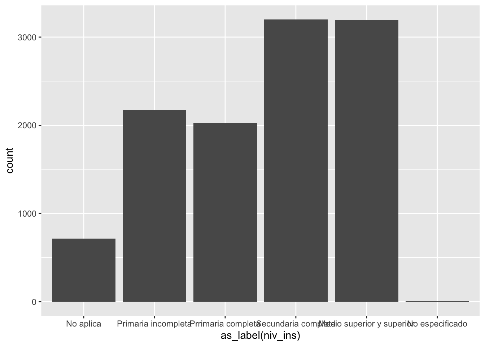
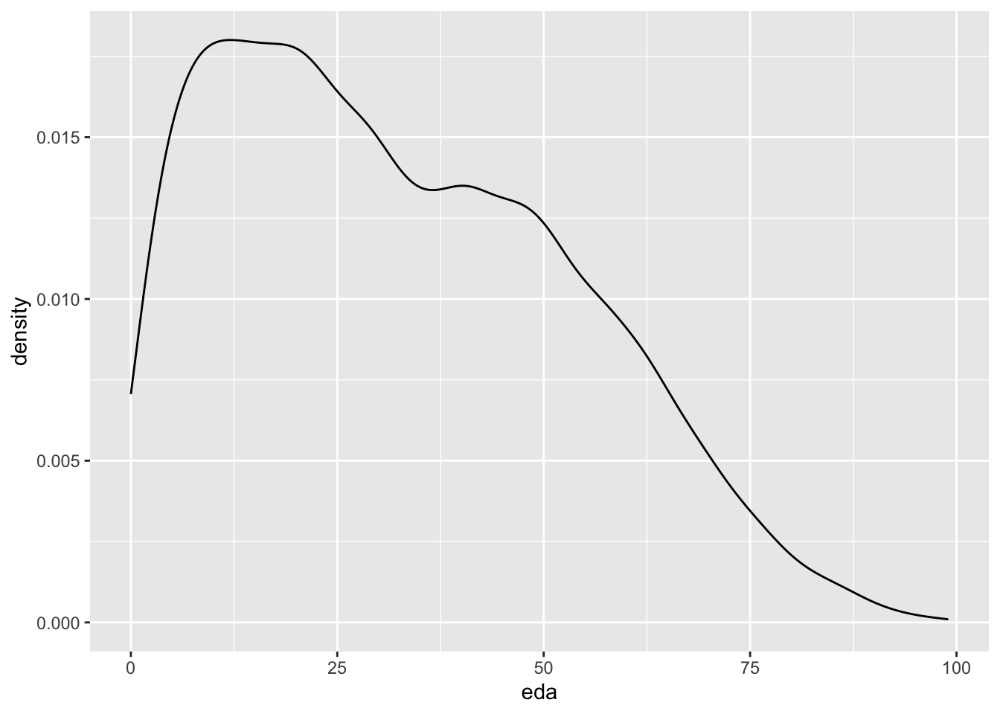

Es un paquete que nos permite poner nuestras tablas en mejores formatos.
Guardemos un ejemplo anterior en un objeto
mi_tabla<-tlaxt322%>%mutate(niv_ins=as_label(niv_ins)) %>%# para que las lea como factormutate(sex=as_label(sex)) %>%# para que las lea como factortabyl(niv_ins, sex, show_missing_levels=F ) %>%# incluimos aquí sexoadorn_totals(c("col", "row")) %>%adorn_percentages("all") %>%# Divide los valores entre el total de la poblaciónadorn_pct_formatting() # lo vuelve porcentaje
Veamos qué pasa con el comando “gt”
gt_tabla<-gt(mi_tabla)gt_tabla
niv_ins
Hombre
Mujer
Total
No aplica
3.4%
2.9%
6.3%
Primaria incompleta
9.4%
9.8%
19.2%
Prrimaria completa
8.4%
9.5%
17.9%
Secundaria completa
12.8%
15.5%
28.3%
Medio superior y superior
13.6%
14.6%
28.2%
No especificado
0.0%
0.0%
0.1%
Total
47.7%
52.3%
100.0%
Con este formato será bastante sencillo agregar títulos y demás:
gt_tabla<-gt_tabla %>%tab_header(title ="Distribución del sexo de la población según nivel de escolaridad",subtitle ="Tlaxcala, trimestre III de 2022" )gt_tabla
Distribución del sexo de la población según nivel de escolaridad
Tlaxcala, trimestre III de 2022
niv_ins
Hombre
Mujer
Total
No aplica
3.4%
2.9%
6.3%
Primaria incompleta
9.4%
9.8%
19.2%
Prrimaria completa
8.4%
9.5%
17.9%
Secundaria completa
12.8%
15.5%
28.3%
Medio superior y superior
13.6%
14.6%
28.2%
No especificado
0.0%
0.0%
0.1%
Total
47.7%
52.3%
100.0%
Agreguemos la fuente a nuestra tabla:
gt_tabla<-gt_tabla %>%tab_source_note(source_note ="Fuente: Cálculos propios con datos de INEGI" )gt_tabla
Distribución del sexo de la población según nivel de escolaridad
Hay cursos específicos de visualización de datos. Es maravilloso pero también requiere que estudiemos bien qué tipo de datos tenemos y cuáles son nuestros objetivos.
Para hacer un gráfico, ggplot2 tiene el comando “ggplot()”. Hacer gráficos con esta función tiene una lógica aditiva. Lo ideal es que iniciemos estableciendo el mapeo estético de nuestro gráfico, con el comando aes()
g1<-tlaxt322 %>%ggplot(aes(as_label(niv_ins)))g1 ## imprime el lienzo
2.8 Gráficos univariados
2.8.1 Para cualitativas
g1 +geom_bar()

g1 +geom_bar(aes(fill =as_label(niv_ins) )) ## colorea la geometría
## Esto es equivalentetlaxt322 %>%ggplot(aes(as_label(niv_ins),fill =as_label(niv_ins) ) ) +geom_bar()
2.8.2 Para variables cuantitativas
Podemos hacer histogramas y gráficos de densidad, de manera fácil. La idea es agregar en nuestro “lienzo” una geometría, un valor para dibujar en él. Esto se agrega con un “+” y con la figura que se añadirá a nuestro gráfico.
g2<-tlaxt322 %>%ggplot(aes(eda))g2 ## imprime el lienzo
2.8.2.1 Histograma
g2 +geom_histogram()
`stat_bin()` using `bins = 30`. Pick better value with `binwidth`.
2.8.3 Intro a dos variables
Vamos a terminar con un código que resume mucho de lo que hemos visto hoy:
tlaxt322 %>%filter(clase2==1) %>%## nos quedamos sólo con los ocupadosselect(eda, ing_x_hrs, anios_esc) %>% GGally::ggpairs()

2.9 Introducción a la inferencia
2.9.1 Hipótesis e intervalos de confianza
2.9.1.1 t-test
Este comando nos sirve para calcular diferentes tipos de test, que tienen como base la distribución t
Univariado para estimación
t.test(tlaxt322$ing_x_hrs) ## pero no tenemos los filtro
One Sample t-test
data: tlaxt322$ing_x_hrs
t = 42.362, df = 11310, p-value < 2.2e-16
alternative hypothesis: true mean is not equal to 0
95 percent confidence interval:
11.53964 12.65937
sample estimates:
mean of x
12.09951
Un truco para poder utilizar funciones de base con formato tidy
tlaxt322 %>%filter(clase2==1) %>%#Filtro de ocupadosfilter(ing_x_hrs>0) %>%#Filtros de quienes reportaron ingresoswith(t.test(ing_x_hrs) )
One Sample t-test
data: ing_x_hrs
t = 51.961, df = 3631, p-value < 2.2e-16
alternative hypothesis: true mean is not equal to 0
95 percent confidence interval:
36.25925 39.10282
sample estimates:
mean of x
37.68103
tlaxt322 %>%filter(clase2==1) %>%#Filtro de ocupadosfilter(ing_x_hrs>0) %>%#Filtros de quienes reportaron ingresoswith(t.test(tlaxt322$ing_x_hrs, mu=40) )
One Sample t-test
data: tlaxt322$ing_x_hrs
t = -97.684, df = 11310, p-value < 2.2e-16
alternative hypothesis: true mean is not equal to 40
95 percent confidence interval:
11.53964 12.65937
sample estimates:
mean of x
12.09951
Para hacer explícitas las hipótesis alternativas
tlaxt322 %>%filter(clase2==1) %>%#Filtro de ocupadosfilter(ing_x_hrs>0) %>%#Filtros de quienes reportaron ingresoswith(t.test(tlaxt322$ing_x_hrs, mu=40, alternative ="two.sided") #default y de dos colas )
One Sample t-test
data: tlaxt322$ing_x_hrs
t = -97.684, df = 11310, p-value < 2.2e-16
alternative hypothesis: true mean is not equal to 40
95 percent confidence interval:
11.53964 12.65937
sample estimates:
mean of x
12.09951
tlaxt322 %>%filter(clase2==1) %>%#Filtro de ocupadosfilter(ing_x_hrs>0) %>%#Filtros de quienes reportaron ingresoswith(t.test(tlaxt322$ing_x_hrs, mu=40, alternative ="greater") ## cola derecha )
One Sample t-test
data: tlaxt322$ing_x_hrs
t = -97.684, df = 11310, p-value = 1
alternative hypothesis: true mean is greater than 40
95 percent confidence interval:
11.62966 Inf
sample estimates:
mean of x
12.09951
tlaxt322 %>%filter(clase2==1) %>%#Filtro de ocupadosfilter(ing_x_hrs>0) %>%#Filtros de quienes reportaron ingresoswith(t.test(tlaxt322$ing_x_hrs, mu=40, alternative ="less") ## cola izquierda )
One Sample t-test
data: tlaxt322$ing_x_hrs
t = -97.684, df = 11310, p-value < 2.2e-16
alternative hypothesis: true mean is less than 40
95 percent confidence interval:
-Inf 12.56935
sample estimates:
mean of x
12.09951
2.9.1.2 Enchulando un poquito
Los resultados tienen la info, pero la podemos almacenar en un objeto. Con los cálculos de modelos es muy útil guardarlos para compararlos.
t.test0<-tlaxt322 %>%filter(clase2==1) %>%#Filtro de ocupadosfilter(ing_x_hrs>0) %>%#Filtros de quienes reportaron ingresoswith(t.test(tlaxt322$ing_x_hrs, mu=40) )
Veamos si lo imprimimos
t.test0
One Sample t-test
data: tlaxt322$ing_x_hrs
t = -97.684, df = 11310, p-value < 2.2e-16
alternative hypothesis: true mean is not equal to 40
95 percent confidence interval:
11.53964 12.65937
sample estimates:
mean of x
12.09951
broom::tidy(t.test0)
# A tibble: 1 × 8
estimate statistic p.value parameter conf.low conf.high method alter…¹
<dbl> <dbl> <dbl> <dbl> <dbl> <dbl> <chr> <chr>
1 12.1 -97.7 0 11310 11.5 12.7 One Sample t-… two.si…
# … with abbreviated variable name ¹alternative
La función “tidy()” hace que el resultado se vuelva un “tibble”, una tabla muy compatible con el tidyverse. Esto puede ser útil cuando queremos ir comparando estimaciones.
Anteriormente vimos con base cómo hacer inferencia. El paquete “infer” tiene también elementos para inferencia, pero en formato más compatible con tidyverse.
tlaxt322 %>%filter(clase2==1) %>%#Filtro de ocupadosfilter(ing_x_hrs>0) %>%#Filtros de quienes reportaron ingresos infer::t_test(response = ing_x_hrs, mu =40)
1-sample proportions test with continuity correction
data: prop, null probability 0.5
X-squared = 259.77, df = 1, p-value < 2.2e-16
alternative hypothesis: true p is not equal to 0.5
95 percent confidence interval:
0.5739084 0.5941550
sample estimates:
p
0.5840669
1-sample proportions test with continuity correction
data: ., null probability 0.5
X-squared = 500.43, df = 1, p-value < 2.2e-16
alternative hypothesis: true p is not equal to 0.5
95 percent confidence interval:
0.6104410 0.6310868
sample estimates:
p
0.6208183
En base necesita que se alimente de un objeto tipo table, el cual es menos manejable. Por eso utilizaremos más el paquete infer
# A tibble: 1 × 4
statistic chisq_df p_value alternative
<dbl> <int> <dbl> <chr>
1 256. 1 7.22e-58 less
## Para que nos dé Ztlaxt322 %>%filter(eda>14& eda<99) %>%set_labels(clase1, labels=etiqueta_pea) %>%mutate(clase1=as_label(clase1)) %>% infer::prop_test(clase1 ~NULL ,p=0.7, alternative="less",success ="PEA", ## necesitamos establecer el éxitoz=TRUE)
# A tibble: 1 × 3
statistic p_value alternative
<dbl> <dbl> <chr>
1 -16.0 5.97e-58 less